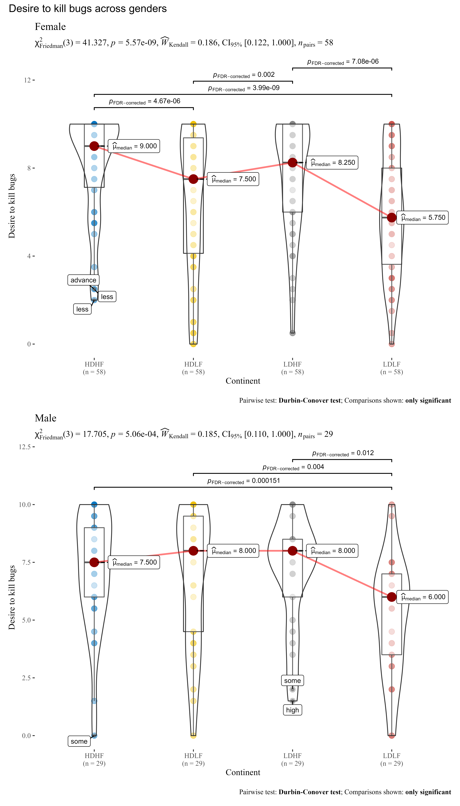

ggwithinstats
Indrajeet Patil
2020-10-01
Source:vignettes/web_only/ggwithinstats.Rmd
ggwithinstats.RmdThe function ggstatsplot::ggwithinstats is designed to facilitate data exploration, and for making highly customizable publication-ready plots, with relevant statistical details included in the plot itself if desired. We will see examples of how to use this function in this vignette.
To begin with, here are some instances where you would want to use ggwithinstats-
to check if a continuous variable differs across multiple groups/conditions
to compare distributions visually and check for outliers
Note: This vignette uses the pipe operator (%>%), if you are not familiar with this operator, here is a good explanation: http://r4ds.had.co.nz/pipes.html
Comparisons between groups with ggwithistats
To illustrate how this function can be used, we will use the bugs dataset throughout this vignette. This data set, “Bugs”, provides the extent to which men and women want to kill arthropods that vary in freighteningness (low, high) and disgustingness (low, high). Each participant rates their attitudes towards all anthropods. Subset of the data reported by Ryan et al. (2013). Note that this is a repeated measures design because the same participant gave four different ratings across four different conditions (LDLF, LDHF, HDLF, HDHF).
Suppose the first thing we want to inspect is the distribution of desire to kill across all conditions (disregarding the factorial structure of the experiment). We also want to know if the mean differences in this desire across conditions is statistically significant.
The simplest form of the function call is-
# since the confidence intervals for the effect sizes are computed using # bootstrapping, important to set a seed for reproducibility set.seed(123) library(ggstatsplot) # function call ggstatsplot::ggwithinstats( data = bugs_long, x = condition, y = desire )

Note:
The function automatically decides whether a dependent samples test is preferred (for 2 groups) or an ANOVA (3 or more groups). based on the number of levels in the grouping variable.
The output of the function is a
ggplotobject which means that it can be further modified withggplot2functions.
As can be seen from the plot, the function by default returns Bayes Factor for the test. If the null hypothesis can’t be rejected with the null hypothesis significance testing (NHST) approach, the Bayesian approach can help index evidence in favor of the null hypothesis (i.e., \(BF_{01}\)).
By default, natural logarithms are shown because Bayes Factor values can sometimes be pretty large. Having values on logarithmic scale also makes it easy to compare evidence in favor alternative (\(BF_{10}\)) versus null (\(BF_{01}\)) hypotheses (since \(log_{e}(BF_{01}) = - log_{e}(BF_{10})\)).
We can make the output much more aesthetically pleasing as well as informative by making use of the many optional parameters in ggwithinstats. We’ll add a title and caption, better x and y axis labels, and tag and label the outliers in the data. We can and will change the overall theme as well as the color palette in use.
# for reproducibility set.seed(123) library(ggstatsplot) library(firatheme) # plot ggstatsplot::ggwithinstats( data = bugs_long, x = condition, y = desire, type = "nonparametric", # type of statistical test xlab = "Condition", # label for the x-axis ylab = "Desire to kill an artrhopod", # label for the y-axis effsize.type = "biased", # type of effect size sphericity.correction = FALSE, # don't display sphericity corrected dfs and p-values pairwise.comparisons = TRUE, # display pairwise comparisons outlier.tagging = TRUE, # whether outliers should be flagged outlier.coef = 1.5, # coefficient for Tukey's rule outlier.label = region, # label to attach to outlier values outlier.label.color = "red", # outlier point label color mean.plotting = TRUE, # whether the mean is to be displayed mean.color = "darkblue", # color for mean ggtheme = firatheme::theme_fira(), # a different theme ggstatsplot.layer = FALSE, # turn off default modification of the used theme package = "yarrr", # package from which color palette is to be taken palette = "info2", # choosing a different color palette title = "Comparison of desire to kill bugs", caption = "Source: Ryan et al., 2013" ) + # modifying the plot further ggplot2::scale_y_continuous( limits = c(0, 10), breaks = seq(from = 0, to = 10, by = 1) )

As can be appreciated from the effect size (partial eta squared) of 0.18, there are small differences in the mean desire to kill across conditions. Importantly, this plot also helps us appreciate the distributions within any given condition.
So far we have only used a classic parametric test, but we can also use other available options: The type (of test) argument also accepts the following abbreviations: "p" (for parametric), "np" (for nonparametric), "r" (for robust), "bf" (for Bayes Factor).
Let’s use the combine_plots function to make one plot from four separate plots that demonstrates all of these options. Let’s compare desire to kill bugs only for low versus high disgust conditions to see how much of a difference whether a bug is disgusting-looking or not makes to the desire to kill that bug. We will generate the plots one by one and then use combine_plots to merge them into one plot with some common labeling. It is possible, but not necessarily recommended, to make each plot have different colors or themes.
For example,
# for reproducibility set.seed(123) library(ggstatsplot) # selecting subset of the data df_disgust <- dplyr::filter(.data = bugs_long, condition %in% c("LDHF", "HDHF")) # parametric t-test p1 <- ggstatsplot::ggwithinstats( data = df_disgust, x = condition, y = desire, type = "p", effsize.type = "d", conf.level = 0.99, title = "Parametric test", package = "ggsci", palette = "nrc_npg", ggtheme = ggthemr::ggthemr(palette = "light") ) # Mann-Whitney U test (nonparametric test) p2 <- ggstatsplot::ggwithinstats( data = df_disgust, x = condition, y = desire, xlab = "Condition", ylab = "Desire to kill bugs", type = "np", conf.level = 0.99, title = "Non-parametric Test", package = "ggsci", palette = "uniform_startrek", ggtheme = ggthemes::theme_map(), ggstatsplot.layer = FALSE ) # robust t-test p3 <- ggstatsplot::ggwithinstats( data = df_disgust, x = condition, y = desire, xlab = "Condition", ylab = "Desire to kill bugs", type = "r", conf.level = 0.99, title = "Robust Test", package = "wesanderson", palette = "Royal2", ggtheme = hrbrthemes::theme_ipsum_tw(), ggstatsplot.layer = FALSE ) # Bayes Factor for parametric t-test p4 <- ggstatsplot::ggwithinstats( data = df_disgust, x = condition, y = desire, xlab = "Condition", ylab = "Desire to kill bugs", type = "bf", title = "Bayesian Test", package = "ggsci", palette = "nrc_npg", ggtheme = ggthemes::theme_fivethirtyeight() ) # combining the individual plots into a single plot ggstatsplot::combine_plots( p1, p2, p3, p4, nrow = 2, title.text = "Effect of disgust on desire to kill bugs ", caption.text = "Source: Bugs dataset from `jmv` R package", title.size = 14, caption.size = 12 )

Grouped analysis with grouped_ggwithinstats
What if we want to carry out this same analysis but for each region (or gender)?
ggstatsplot provides a special helper function for such instances: grouped_ggwithinstats. This is merely a wrapper function around ggstatsplot::combine_plots. It applies ggwithinstats across all levels of a specified grouping variable and then combines list of individual plots into a single plot. Note that the grouping variable can be anything: conditions in a given study, groups in a study sample, different studies, etc.
Let’s focus on the two regions and for years: 1967, 1987, 2007. Also, let’s carry out pairwise comparisons to see if there differences between every pair of continents.
# for reproducibility set.seed(123) library(ggstatsplot) ggstatsplot::grouped_ggwithinstats( # arguments relevant for ggstatsplot::ggwithinstats data = bugs_long, x = condition, y = desire, grouping.var = gender, xlab = "Continent", ylab = "Desire to kill bugs", type = "nonparametric", # type of test pairwise.comparisons = TRUE, # display results from pairwise comparisons pairwise.display = "significant", # display only significant pairwise comparisons p.adjust.method = "fdr", # adjust p-values for multiple tests using this method ggtheme = ggthemes::theme_tufte(), package = "ggsci", palette = "default_jco", notch = TRUE, outlier.tagging = TRUE, ggstatsplot.layer = FALSE, outlier.label = education, k = 3, mean.ci = TRUE, title.prefix = "Year", # arguments relevant for ggstatsplot::combine_plots title.text = "Desire to kill bugs across genders", plotgrid.args = list(ncol = 1) )

Grouped analysis with ggwithinstats + purrr
Although this grouping function provides a quick way to explore the data, it leaves much to be desired. For example, the same type of test and theme is applied for all genders, but maybe we want to change this for different genders, or maybe we want to gave different effect sizes for different years. This type of customization for different levels of a grouping variable is not possible with grouped_ggwithinstats, but this can be easily achieved using the purrr package.
See the associated vignette here: https://indrajeetpatil.github.io/ggstatsplot/articles/web_only/purrr_examples.html
Between-subjects designs
For independent measures designs, ggbetweenstats function can be used: https://indrajeetpatil.github.io/ggstatsplot/articles/web_only/ggbetweenstats.html
Summary of tests
Following (within-subjects) tests are carried out for each type of analyses-
| Type | No. of groups | Test |
|---|---|---|
| Parametric | > 2 | One-way repeated measures ANOVA |
| Non-parametric | > 2 | Friedman test |
| Robust | > 2 | Heteroscedastic one-way repeated measures ANOVA for trimmed means |
| Bayes Factor | > 2 | One-way repeated measures ANOVA |
| Parametric | 2 | Student’s t-test |
| Non-parametric | 2 | Wilcoxon signed-rank test |
| Robust | 2 | Yuen’s test on trimmed means for dependent samples |
| Bayes Factor | 2 | Student’s t-test |
Following effect sizes (and confidence intervals/CI) are available for each type of test-
| Type | No. of groups | Effect size | CI? |
|---|---|---|---|
| Parametric | > 2 | \(\eta_{p}^2\), \(\omega^2\) | Yes |
| Non-parametric | > 2 | \(W_{Kendall}\) (Kendall’s coefficient of concordance) | Yes |
| Robust | > 2 | No | No |
| Bayes Factor | > 2 | No | No |
| Parametric | 2 | Cohen’s d, Hedge’s g (central-and noncentral-t distribution based) | Yes |
| Non-parametric | 2 | r (computed as \(Z/\sqrt{N}\)) | Yes |
| Robust | 2 | \(\delta_{R}\) (robust standardized difference similar to Cohen’s d) | Yes |
| Bayes Factor | 2 | Yes | Yes |
Here is a summary of multiple pairwise comparison tests supported in ggwithinstats-
| Type | Test | p-value adjustment? |
|---|---|---|
| Parametric | Student’s t-test | Yes |
| Non-parametric | Durbin-Conover test | Yes |
| Robust | Yuen’s trimmed means test | Yes |
| Bayes Factor | Student’s t-test | NA |
Effect size interpretation
To see how the effect sizes displayed in these tests can be interpreted, see: https://indrajeetpatil.github.io/ggstatsplot/articles/web_only/effsize_interpretation.html
Suggestions
If you find any bugs or have any suggestions/remarks, please file an issue on GitHub: https://github.com/IndrajeetPatil/ggstatsplot/issues
Session Information
For details, see- https://indrajeetpatil.github.io/ggstatsplot/articles/web_only/session_info.html